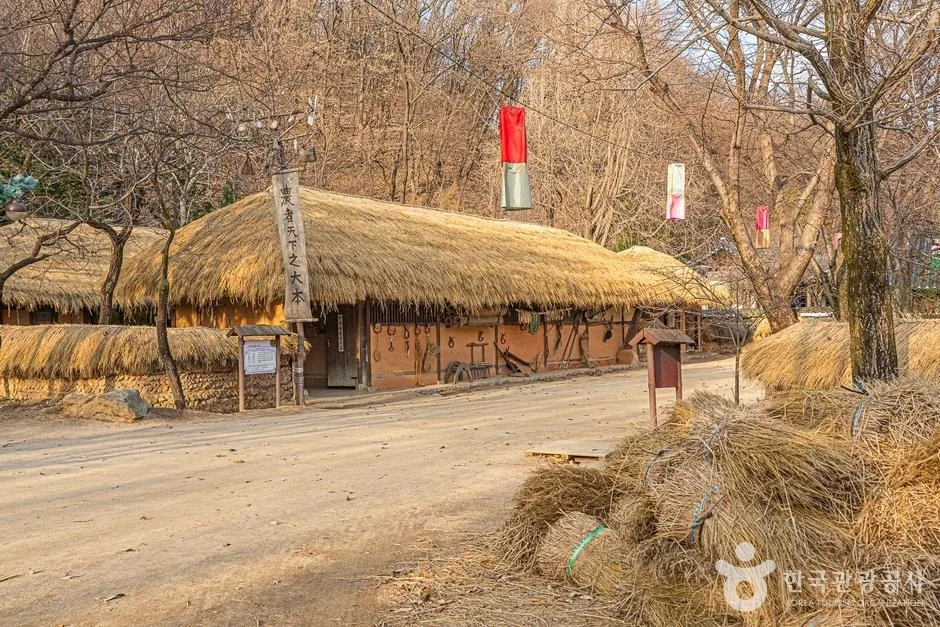
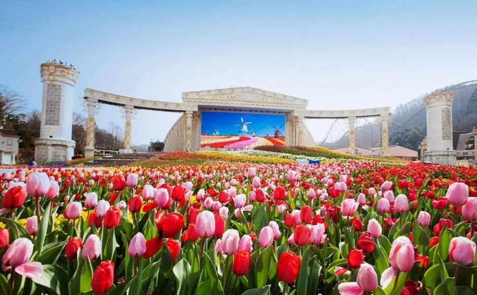
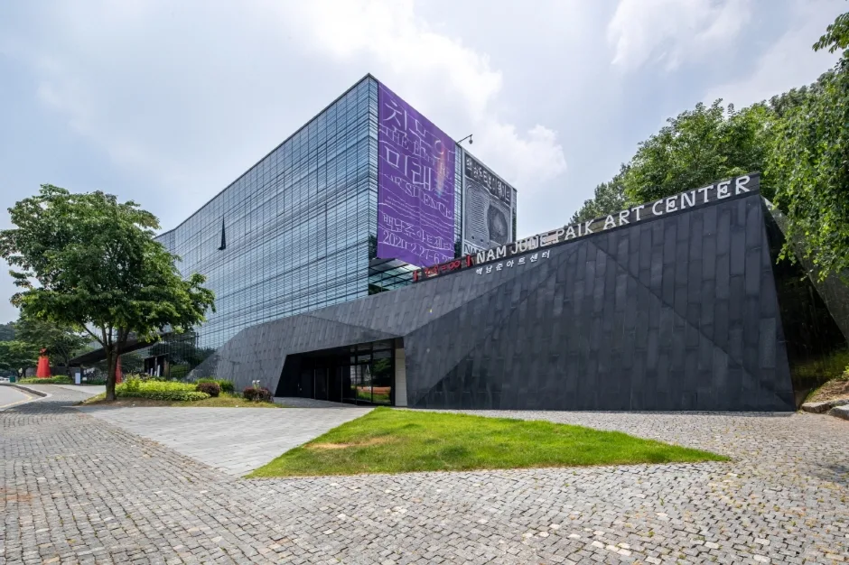
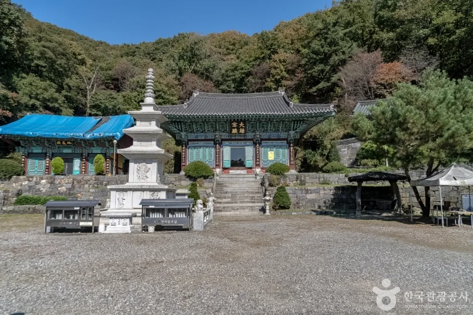

▲ 한국민속촌의 양반가 가옥. 조선시대 민속마을을 재현한 공간이다
한국민속촌은 주차장이 좁아서 막히는 곳이 아닙니다. 부지가 넓고 주차 면수도 적지 않습니다.
막히는 이유는 시간이 겹치기 때문입니다. 관람 시간이 오전 10시부터 오후 6시까지로 정해져 있으니, 사람들이 들어오는 시각과 나가는 시각이 거의 같습니다. 여기에 같은 용인권의 에버랜드 교통량이 주말마다 겹칩니다.
1. 어떤 곳인가 — 규모를 먼저 알아야 한다
한국민속촌은 테마파크가 아니라 재현 마을입니다. 조선시대 민속마을을 지형째 옮겨 놓은 구조라, 관람 동선이 실내가 아니라 야외 흙길로 이어집니다.

▲ 초가집과 흙길. 동선 대부분이 야외라 날씨의 영향을 크게 받는다 ⓒ 대한민국 구석구석(한국관광공사)
이 점이 체류 시간을 결정합니다. 걸어서 도는 구조이므로 최소 세 시간, 체험을 넣으면 반나절이 걸립니다. 짧게 끊고 나올 수 있는 곳이 아니라는 뜻이고, 그래서 출차도 폐장 시각에 몰립니다.
▲ 체험 프로그램이 많아 가족 단위 체류 시간이 길어진다 ⓒ 대한민국 구석구석(한국관광공사)
입장료는 성인·청소년 32,000원입니다. 아동은 26,000원, 경로와 장애인은 22,000원입니다. 4인 가족 기준으로 10만원을 넘기 때문에, 도착해서 대기하다 시간을 버리면 체감 손실이 큽니다.
2. 진입로에서 시간이 사라진다
용인 지역의 주말 교통은 단일 시설로 설명되지 않습니다. 에버랜드, 한국민속촌, 그리고 주변 카페·식당 수요가 같은 도로망을 씁니다. 영동고속도로와 경부고속도로에서 빠져나오는 차량이 같은 구간에 모입니다.
▲ 같은 용인권의 에버랜드. 주말에는 두 시설의 접근 교통이 겹친다 ⓒ 대한민국 구석구석(한국관광공사)
피크는 두 번입니다. 개장 직후인 오전 10~11시대에 진입이 몰리고, 폐장 직전인 오후 5~6시대에 출차가 몰립니다. 이 두 시간대를 피하면 같은 거리를 절반의 시간에 이동할 수 있습니다.

▲ 시즌 축제가 겹치는 주말에는 교통량이 한 번 더 올라간다 ⓒ 대한민국 구석구석(한국관광공사)
| 시간대 | 상황 | 권장 |
|---|---|---|
| ~09:30 | 한산 | 가장 유리 — 개장 대기 감수 |
| 10:00~11:30 | 진입 집중 | 회피 |
| 12:00~15:00 | 중간 | 무난 |
| 15:00~16:30 | 중간 | 무난 — 관람 시간 부족 주의 |
| 17:00~18:00 | 출차 집중 | 가장 불리 |
3. 붙여 갈 곳을 정해두면 달라진다
폐장 시각에 나오지 않는 것이 요령입니다. 오후 4시 30분쯤 먼저 빠져나와 근처에서 시간을 보내면, 정체가 풀린 뒤 귀가할 수 있습니다. 문제는 그 사이에 갈 곳이 있느냐입니다.

▲ 백남준아트센터. 기흥구에 있어 민속촌에서 차로 가깝다 ⓒ 대한민국 구석구석(한국관광공사)
백남준아트센터는 같은 기흥구에 있습니다. 경기도립미술관으로 2008년 10월 개관했고, 상설 관람은 무료입니다(특별기획전은 별도). 실내 시설이라 날씨의 영향을 받지 않는다는 점도 조합에 유리합니다.

▲ 용인 백련사. 인파가 몰리지 않아 시간을 흘려보내기 좋다 ⓒ 대한민국 구석구석(한국관광공사)
정체를 피하는 대기 장소로 사찰이나 수목원 같은 곳도 유효합니다. 핵심은 "한 시간 반을 보낼 수 있고 주차가 쉬운 곳"입니다. 식당은 같은 시간대에 붐비므로 정체 회피용으로는 적합하지 않을 수 있습니다.
4. 차로 갈 때 정리해둘 것
야외 시설이라는 점이 준비물을 바꿉니다. 흙길과 오르내림이 있어 유모차와 휠체어는 경로 확인이 필요하고, 비가 오면 노면이 미끄러워집니다.
| 항목 | 내용 |
|---|---|
| 도착 시각 | 개장 전 또는 정오 이후 |
| 출차 시각 | 폐장 30분 전 이탈 권장 |
| 체류 시간 | 최소 3시간, 체험 포함 시 반나절 |
| 날씨 | 동선 대부분 야외 — 우천 시 대안 필요 |
| 연계 코스 | 백남준아트센터 등 실내·근거리 시설 |
| 운영 변동 | 계절·날씨에 따라 시간 변경 — 사전 확인 |
정리하면 이렇습니다. 한국민속촌에서 차 때문에 손해를 보는 지점은 주차 공간이 아니라 도착과 출발 시각입니다. 개장 시각과 폐장 시각을 30분씩만 비켜 가면, 같은 하루가 훨씬 길어집니다.